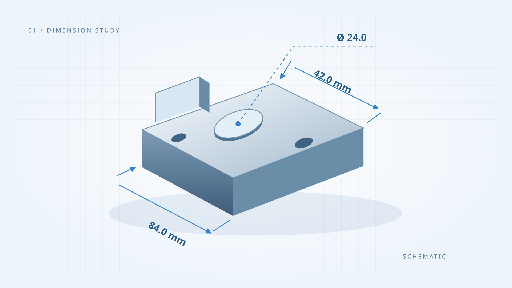
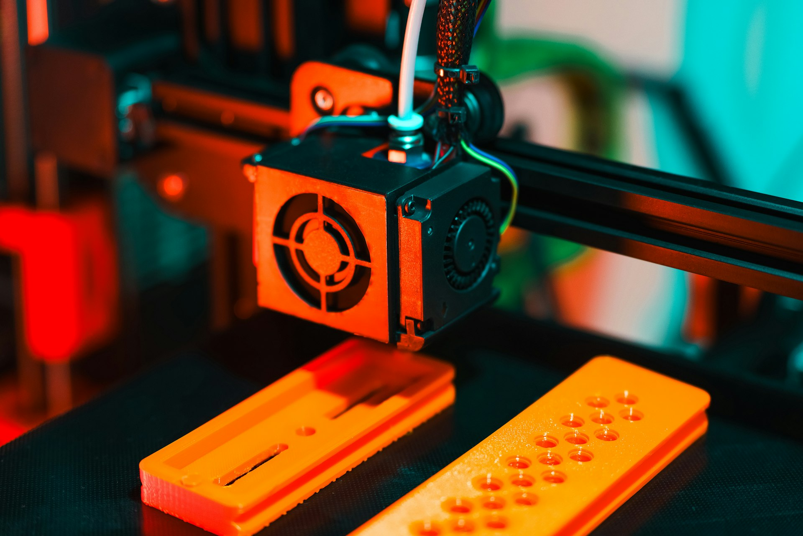
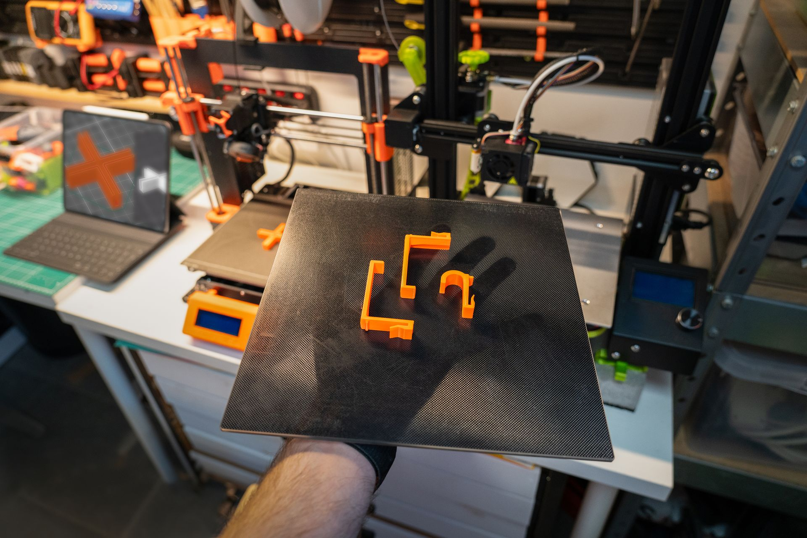

Восстановим пластиковую деталь по образцу — от одного экземпляра до повторной партии
Оцифруем деталь, восстановим 3D-модель, изготовим контрольный образец и при необходимости выпустим серию через 3D-печать или литьё в силиконовую форму.
Работаем с корпусами, крышками, кожухами, креплениями, ручками, заглушками, техническими и эластичными деталями.
Предварительно оценим, можно ли изготовить деталь, какую технологию выбрать и какой бюджет закладывать.
- Можно начать с фото, образца, чертежа или повреждённой детали
- Изготавливаем контрольный экземпляр перед серией
- Используем FDM, SLA, мастер-модели и литьё в силикон
- Подбираем технологию под задачу, а не просто «печатаем как есть»
- Сохраняем модель и параметры для повторного заказа
- Подходит для B2B, сервисных компаний, производств и частных задач

Деталь нужна, а купить её невозможно, долго или слишком дорого
Частая ситуация: пластиковая деталь сломалась, поставщик больше её не производит, оригинальный артикул недоступен, импортная комплектующая идёт месяцами или продаётся только в составе большого узла.
В таких случаях деталь можно восстановить и изготовить заново.
Мы работаем с задачами, когда нужно:
- восстановить снятую с производства пластиковую деталь;
- сделать копию детали по образцу;
- заменить импортную пластиковую комплектующую;
- изготовить небольшой сервисный запас;
- адаптировать деталь под новое оборудование;
- сделать одну штуку для проверки;
- выпустить повторную партию 5–300 изделий.
Мы не просто копируем внешнюю форму. Мы смотрим, как деталь работает: где она крепится, какие нагрузки принимает, с чем контактирует, какая поверхность нужна и какой материал будет безопаснее использовать.
Какие детали можно восстановить и произвести
Корпусные детали
- корпуса приборов;
- крышки;
- кожухи;
- панели;
- защитные элементы;
- декоративные накладки;
- заглушки.
Крепления и элементы сборки
- фиксаторы;
- держатели;
- кронштейны;
- направляющие;
- переходники;
- монтажные элементы;
- опоры.
Детали оборудования
- ручки;
- кнопки;
- маховики;
- защитные колпачки;
- воздуховоды;
- крышки механизмов;
- элементы сервисного назначения.
Эластичные элементы
- уплотнения;
- демпферы;
- накладки;
- амортизирующие элементы;
- гибкие вставки;
- защитные элементы.
Авто, спецтехника и реставрация
- элементы салона;
- декоративные детали;
- заглушки;
- корпуса;
- ненагруженные крепления;
- пластиковые элементы редкой техники.
Мы не берём в работу детали, отказ которых может повлиять на безопасность людей или оборудования, без отдельной инженерной проверки и испытаний.
К таким деталям относятся:
- элементы тормозной системы;
- детали рулевого управления;
- нагруженные элементы подвески;
- сосуды под давлением;
- ответственные медицинские изделия;
- детали с критическими силовыми и температурными нагрузками.
Для кого эта услуга
Производственные предприятия
Когда нужна недоступная деталь, сервисный запас или замена импортного компонента.
Сервисные и ремонтные компании
Когда нельзя быстро купить оригинальную комплектующую.
Производители оборудования
Когда нужно восстановить, адаптировать или локализовать пластиковую деталь.
Автосервисы и реставрационные мастерские
Когда нужна редкая ненагруженная пластиковая деталь.
Частные заказчики
Когда требуется восстановить уникальный пластиковый элемент.
Оказываем услуги 3D-печати — для мастер-моделей, прототипов и готовых деталей
3D-печать используется не только как самостоятельный способ изготовления детали, но и как важный этап перед литьём в силиконовую форму.
Прочные функциональные детали
- технических деталей;
- корпусов;
- креплений;
- функциональных прототипов;
- оснастки;
- изделий, где важна прочность и скорость изготовления.
Высокая детализация и гладкая поверхность
- мелких и детализированных деталей;
- гладких прототипов;
- мастер-моделей;
- изделий с тонкими элементами;
- визуальных образцов;
- формообразующих моделей перед литьём.
Когда печать выгоднее литья
3D-печать чаще выбирается, если нужно:
- 1–10 изделий;
- быстро проверить посадку;
- изменить конструкцию после теста;
- получить образец перед изготовлением формы;
- сделать деталь без затрат на оснастку.
Когда после печати лучше перейти к литью
Литьё в силиконовую форму имеет смысл, когда:
- нужна партия от 10–20 изделий;
- важна более гладкая поверхность;
- нужно повторить одну и ту же деталь;
- стоимость печати каждого изделия становится слишком высокой;
- требуется другой материал, цвет или эластичность.
Мы не навязываем клиенту 3D-печать или литьё. Сначала оцениваем задачу, количество, материал и требования, а затем предлагаем оптимальный производственный маршрут.
Необязательно иметь готовый чертёж
Для предварительной оценки подойдут один или несколько материалов:
Чем точнее мы понимаем назначение детали, тем правильнее можем подобрать материал и технологию. Внешне похожие детали могут требовать совершенно разных решений.
От старой детали до готового изделия
Первичная оценка
Вы присылаете фото, размеры, описание задачи и нужное количество.
- можно ли изготовить изделие;
- каких данных не хватает;
- какую технологию рассматривать;
- какой срок возможен;
- какой диапазон бюджета закладывать.
Оцифровка
В зависимости от задачи используем:
- ручные измерения;
- 3D-сканирование;
- восстановление модели по чертежу;
- моделирование по месту установки;
- комбинированный метод.
Восстановление 3D-модели
Создаём рабочую модель детали, исправляем повреждения и при необходимости усиливаем слабые места.
Все изменения согласовываются заранее.
Контрольный образец
Изготавливаем первую деталь, чтобы проверить:
- размеры;
- посадку;
- сборку;
- внешний вид;
- совместимость с сопрягаемыми элементами.

Корректировка
Если при примерке появляются замечания, вносим изменения в модель.
Производство партии
После согласования образца запускаем нужное количество изделий.
Цифровой архив
Сохраняем:
- утверждённую модель;
- материал;
- технологию;
- параметры производства;
- историю изменений.
Не каждая деталь должна быть напечатана. Не каждая деталь должна отливаться
FDM-печать
- скорость;
- функциональность;
- прочность;
- низкая стоимость запуска;
- возможность быстро изменить модель.
SLA-печать
- высокая детализация;
- гладкая поверхность;
- точность мелких элементов;
- качественная мастер-модель.
Литьё в силиконовую форму
- повторяемые партии;
- более гладкая поверхность;
- несколько десятков одинаковых деталей;
- эластичные или полиуретановые изделия;
- более выгодная стоимость одной детали в серии.
Часто лучший сценарий
- восстановили модель;
- напечатали прототип;
- проверили посадку;
- изготовили мастер-модель;
- сделали силиконовую форму;
- отлили партию.
Из каких материалов можно изготовить деталь
Для жёстких изделий
- PLA;
- PETG;
- ABS;
- ASA;
- полиамиды;
- инженерные пластики;
- литьевые полиуретаны.
Для гибких изделий
- TPU;
- эластичные полиуретаны;
- специальные силиконы;
- материалы различной жёсткости.
- температуру;
- контакт с маслами и химией;
- ультрафиолет;
- трение;
- ударную нагрузку;
- требования к поверхности;
- условия эксплуатации.
Не просто копируем форму — восстанавливаем функцию детали
Не просто копируем форму
Сначала разбираемся, какую функцию выполняет деталь.
Подбираем технологию
Сравниваем 3D-печать, мастер-модель, силиконовую форму и литьё.
Изготавливаем контрольный образец
Серия запускается только после проверки.
Сохраняем модель
Повторный заказ не требует начинать работу заново.
Ведём весь процесс
Клиенту не нужно искать отдельно конструктора, печатника, сканировщика и литейщика.
Как организовано производство
На этапе запуска часть операций может выполняться на квалифицированных партнёрских мощностях под нашим техническим сопровождением.
Мы отвечаем за:
- постановку задачи;
- подготовку модели;
- подбор технологии;
- расчёт;
- производство образца;
- координацию подрядчиков;
- контроль результата;
- запуск повторной партии.

Из чего складывается цена
На стоимость влияет:
- состояние исходной детали;
- сложность геометрии;
- необходимость моделирования;
- размер;
- материал;
- технология;
- количество;
- точность;
- поверхность;
- необходимость формы;
- постобработка.
Точная стоимость определяется после анализа исходной детали и требований.

Предварительно оценим, можно ли изготовить деталь, какую технологию выбрать и какой бюджет закладывать.
Рассчитать изготовление деталиПопробуйте составить заявку
Ответим, подходит ли задача для 3D-печати, литья в силикон или другого способа производства.
- Первичная оценка — бесплатно
- Можно начать с фото или повреждённой детали
- Сохраняем модель для последующих заказов
Предпросмотр демонстрирует, как из полей получается структурированная заявка. Это не заказ и не запрос на расчёт.
Пример заявки
Результат остаётся на этой странице. Мы ничего не отправляем и не сохраняем в хранилище браузера.
Частые вопросы
01
Можно ли изготовить деталь, если она сломана?
Да, если сохранилась основная геометрия или её можно восстановить по месту установки.
02
Можно ли просто напечатать деталь на 3D-принтере?
Да, если печать подходит по прочности, точности, поверхности и условиям эксплуатации.
03
Можно ли напечатать мастер-модель для формы?
Да. SLA- и качественная FDM-печать часто используются для изготовления мастер-моделей перед силиконовым литьём.
04
Когда нужна силиконовая форма?
Когда нужно несколько десятков одинаковых изделий, более гладкая поверхность или материал, который выгоднее получать литьём.
05
Можно ли заказать одну штуку?
Да. Для одной детали чаще используется 3D-печать.
06
Можно ли заказать повторную партию?
Да. После согласования модели мы сохраняем производственные данные.
07
Можно ли скопировать любую деталь?
Нет. Ответственные детали требуют отдельной инженерной проверки, испытаний и иногда сертификации.
Не знаете, можно ли восстановить вашу деталь?
Пришлите фото, размеры и описание назначения. Мы определим, подходит ли задача для FDM/SLA-печати, мастер-модели, силиконовой формы или другого производственного маршрута.
Посмотреть пример заявкиВ демо можно проверить структуру заявки. Сайт не принимает заказы и не связывает с производством.